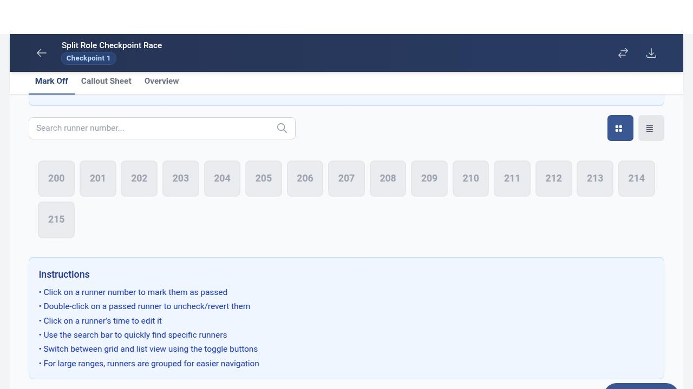
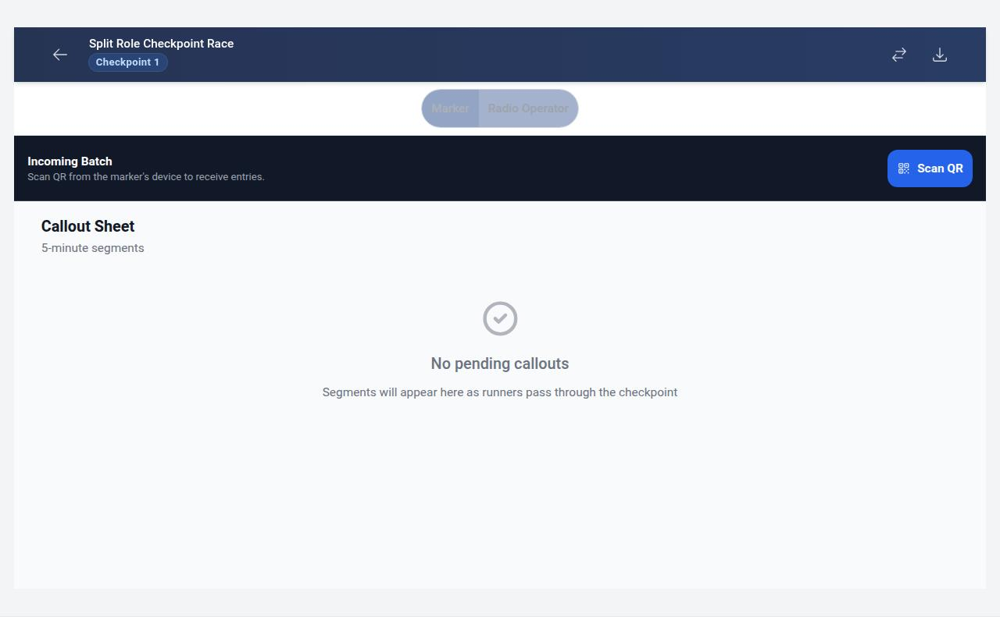
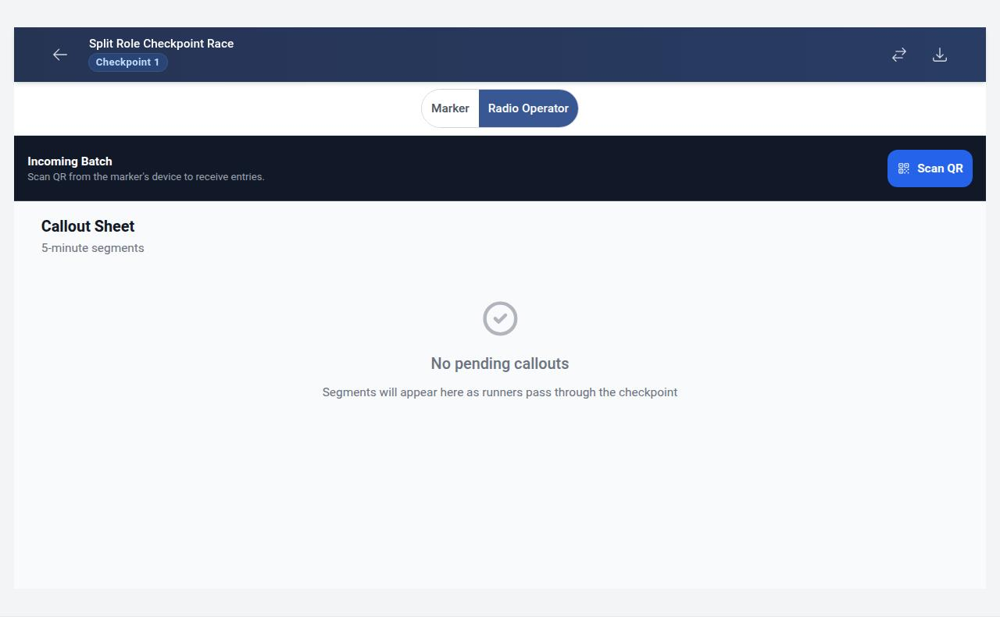
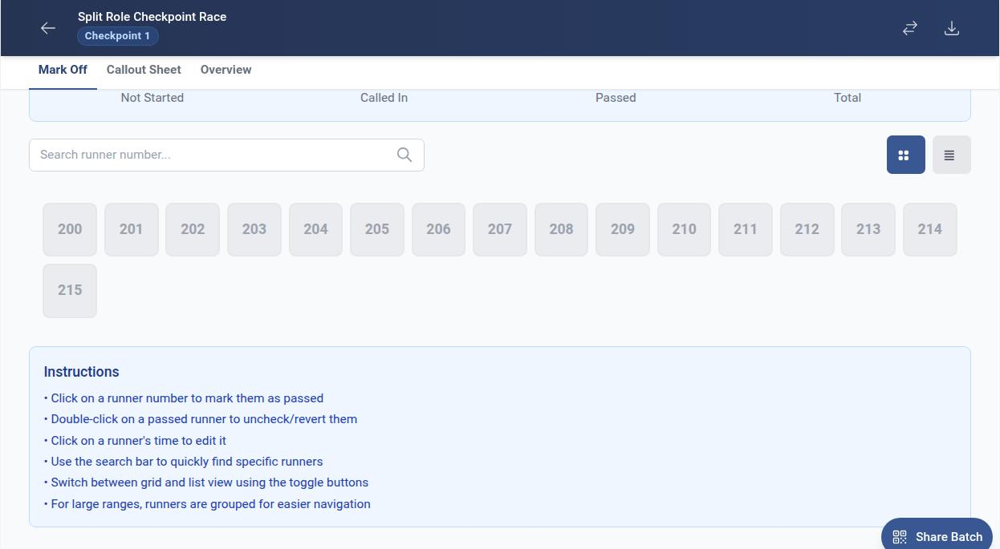
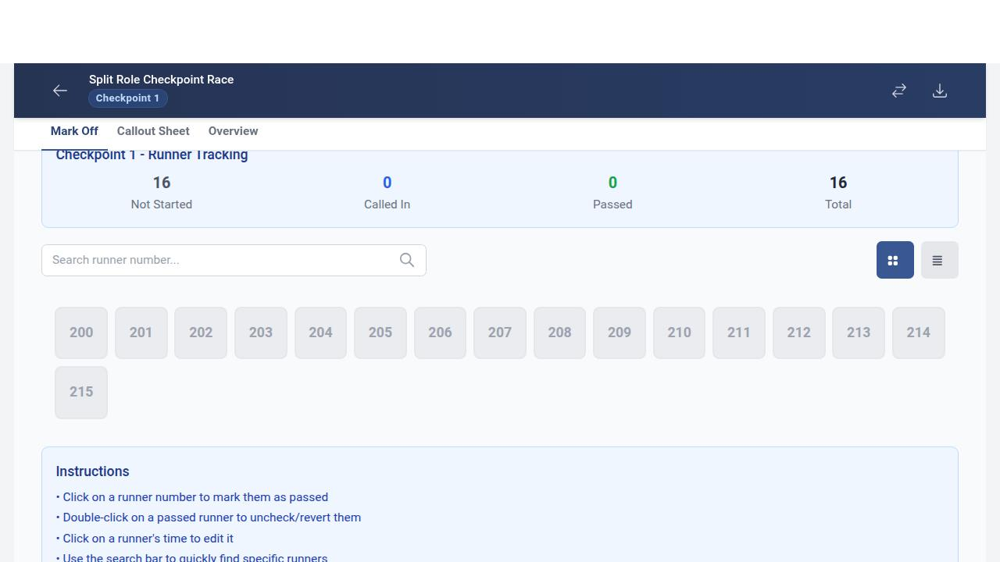
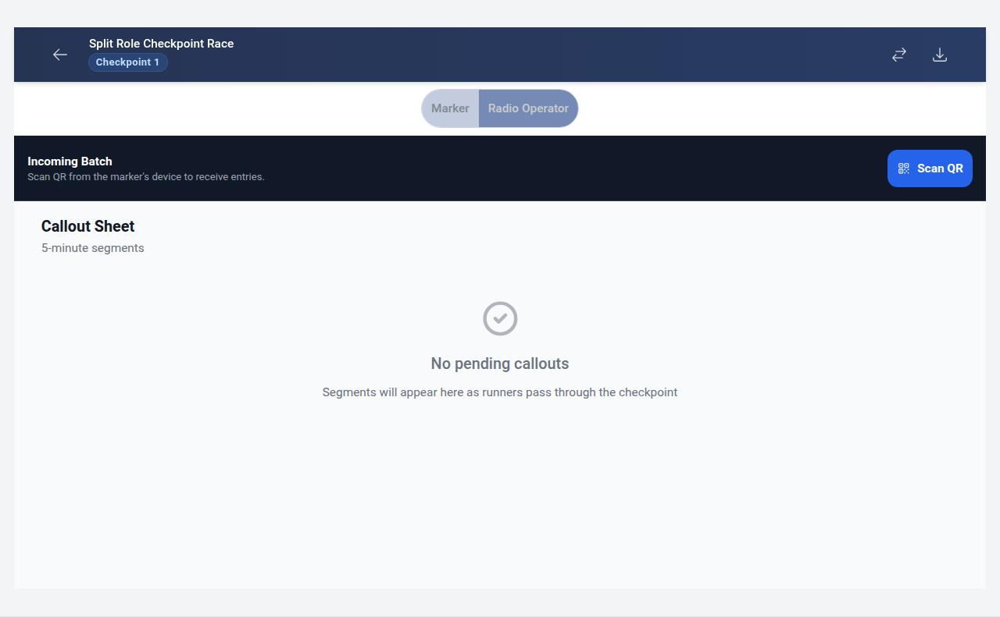
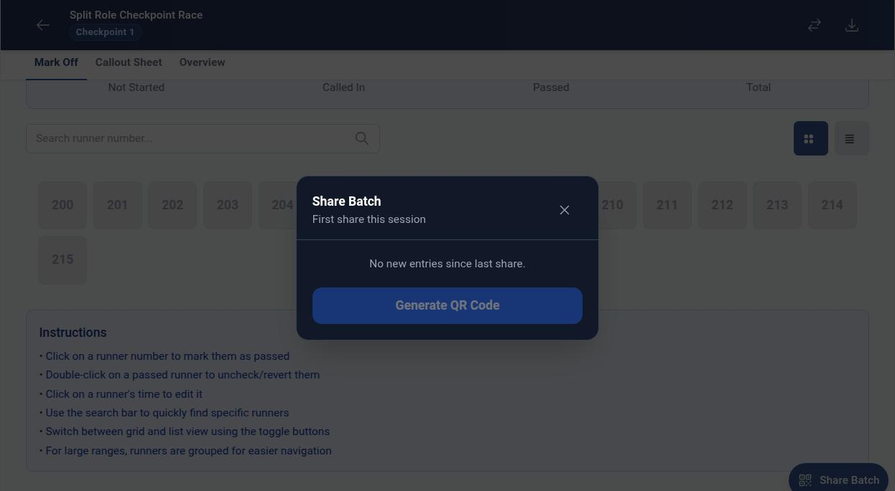

Split-Role Checkpoint Operations
How two operators can share one checkpoint — a Marker records runner times and shares batches via QR code, while a Radio Operator scans the QR and calls runners in to base.
Checkpoint opens in Marker mode by default
Navigate to checkpoint 1

Role toggle is visible with Marker and Radio Operator buttons

Marker mode — runner grid is visible

Switching to Radio Operator mode replaces the runner grid with a scan zone
Navigate to checkpoint 1 in default Marker mode

Click Radio Operator toggle button

Radio Operator mode — scan zone is visible with Scan QR button

Switching back to Marker mode restores the runner grid
Navigate to checkpoint 1 and switch to Radio Operator

Click Marker toggle to switch back

Marker mode — runner grid tabs are restored

Share Batch button is visible in Marker mode with a QR icon
Navigate to checkpoint 1 in Marker mode
Share Batch FAB is visible with QR icon

Share Batch button is hidden in Radio Operator mode
Navigate to checkpoint 1 in Marker mode

Switch to Radio Operator mode

Share Batch button is no longer visible

Share Batch opens the batch share modal
Navigate to checkpoint 1 in Marker mode

Click Share Batch button

Batch share modal appears with Share Batch heading
